Youth-led comfort project
SmileyStitches
Handmade plushies. Big comfort. Brighter smiles.
Leilani creates crochet comfort plushies for children in dental offices and healthcare spaces, helping appointments feel softer, calmer, and more full of smiles.
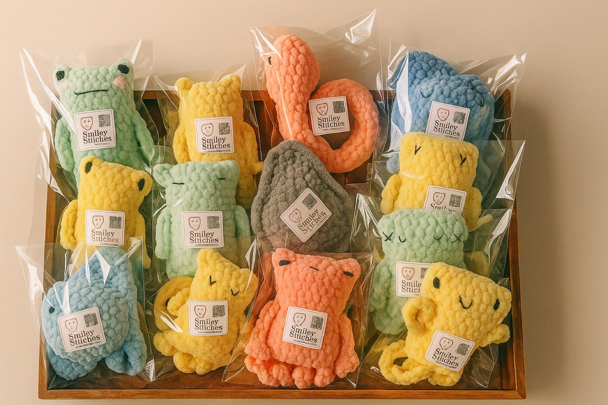
About
Made by hand, shared with heart.
SmileyStitches was founded by Leilani, a student who uses her love of crochet to help children feel less nervous during dental visits. Each plushie is handmade, packaged, and donated with care so a child has something soft to hold during an unfamiliar moment.
Every plushie includes care.
Handmade stitching, gentle packaging, donation tracking, and a SmileyStitches label help each delivery feel personal, trustworthy, and ready for a child to receive.
Mission
“SmileyStitches brings comfort and joy to children in dental and healthcare settings by creating and donating handmade crochet plushies, while inspiring kindness through youth-led community service.”
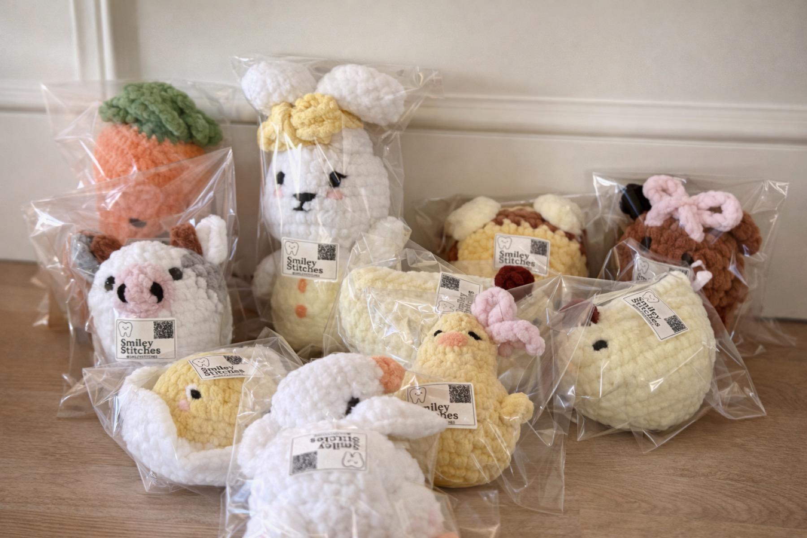
Partner Spotlight
Comfort plushies for Elite Pediatric Dentistry.
Leilani has donated packaged SmileyStitches plushies to Elite Pediatric Dentistry in Rancho Bernardo, where the colorful handmade friends have helped comfort many children during dental visits.
🦷 Dental setting
📍 Rancho Bernardo
💛 Kid comfort
Impact
Small plushies, meaningful proof of service.
This space helps document community service, nonprofit impact, and partnership growth for donors, parents, dental offices, and school or college reviewers.
Community service documentation
Keep this section updated with dated donation batches, partner names, supply donors, volunteer hours, and photos of packaged plushies. It gives reviewers a clear record of the service behind each smile.
Plushie Donation Tracker
Track each batch from yarn to smile.
Use this area to share donation batches, supply needs, partner deliveries, and verified community service hours in one polished place.
Recent batch
Ready to deliver
Partner
Elite Pediatric Dentistry
Care labels
QR-ready
Gallery
Plushie photo wall
Real photos of Leilani’s handmade plushies, from soft studio portraits to packaged donation batches ready for children.
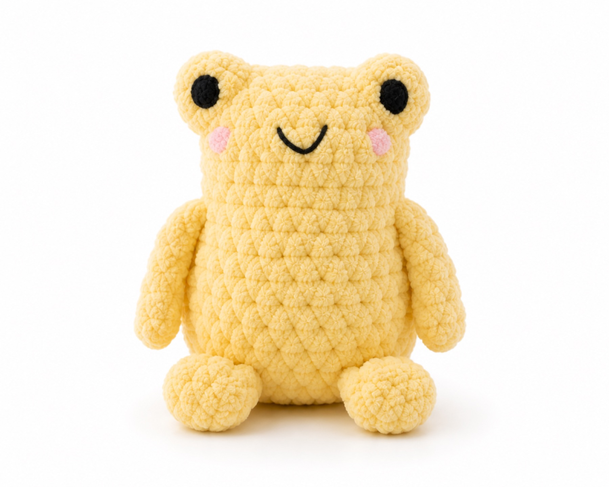
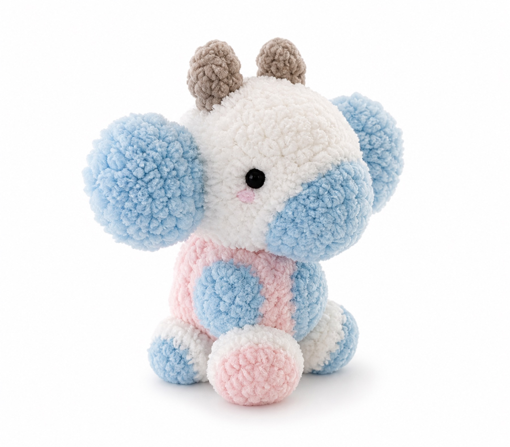
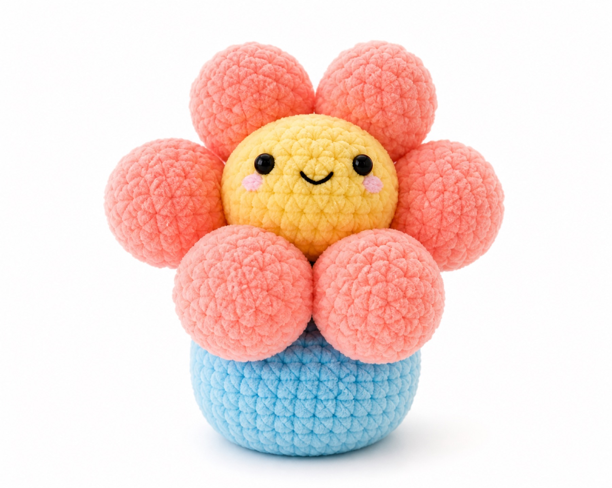
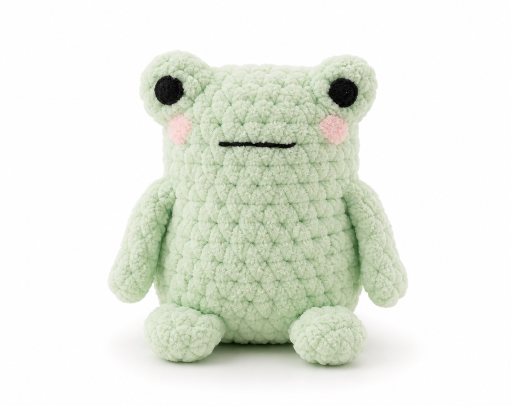
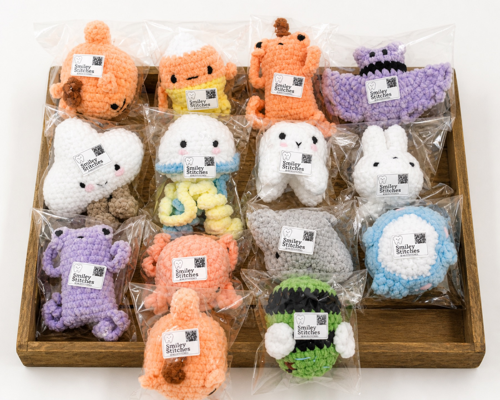
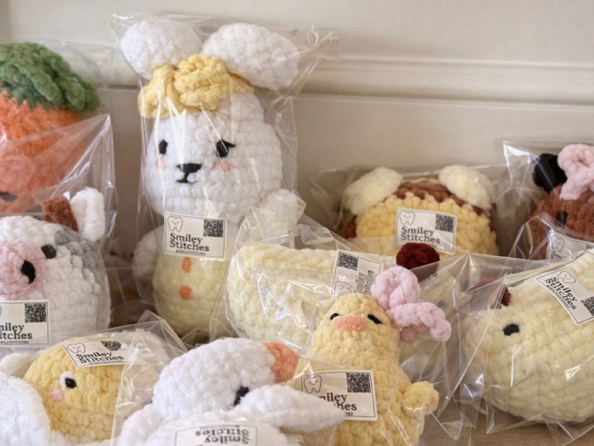
Our Story
A youth-led project with a growing trail of kindness.
Leilani starts crocheting comfort plushies.
A hobby becomes a way to help children feel calmer during appointments.
Plushies reach Elite Pediatric Dentistry.
Packaged plushies are donated in Rancho Bernardo to help children feel more at ease during dental care.
Community service tracking grows.
Hours, supplies, partners, and donations are documented for lasting impact.
Logo Kit
A softer mark for labels, stickers, and care cards.
The updated logo keeps Leilani’s original smiling tooth idea, adds a subtle stitched label border, and uses a warmer pastel palette that still works cleanly in black and white.
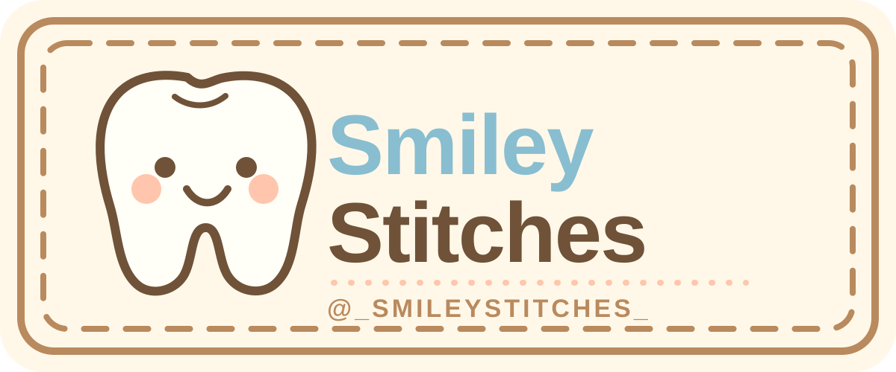
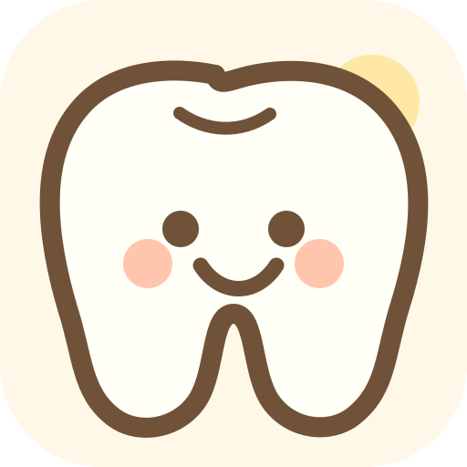
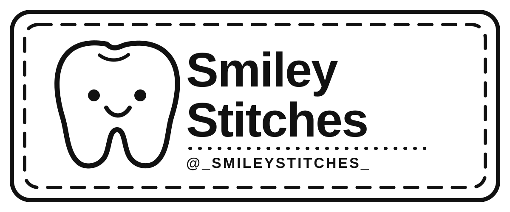
Get Involved
There are many ways to stitch a smile.
Donate yarn or supplies
Help provide soft yarn, safety eyes, stuffing, labels, mailers, and packaging.
Sponsor a plushie
Fund materials for one comfort plushie or support a full dental office batch.
Partner as a dental office
Request donated plushies for children who may need comfort during visits.
Volunteer or crochet with us
Join a crochet day, prep care tags, package plushies, or help track donations.
Package Labels
QR-ready for plushie tags.
Add a QR code here later so families, partners, and reviewers can scan to learn the story behind each handmade donation.
QR code placeholder
Contact
Request plushies, donate supplies, or start a partnership.
Send a note and Leilani can follow up about donations, plushie requests, volunteer opportunities, or dental office partnerships. SmileyStitches currently uses Instagram as its main contact channel.